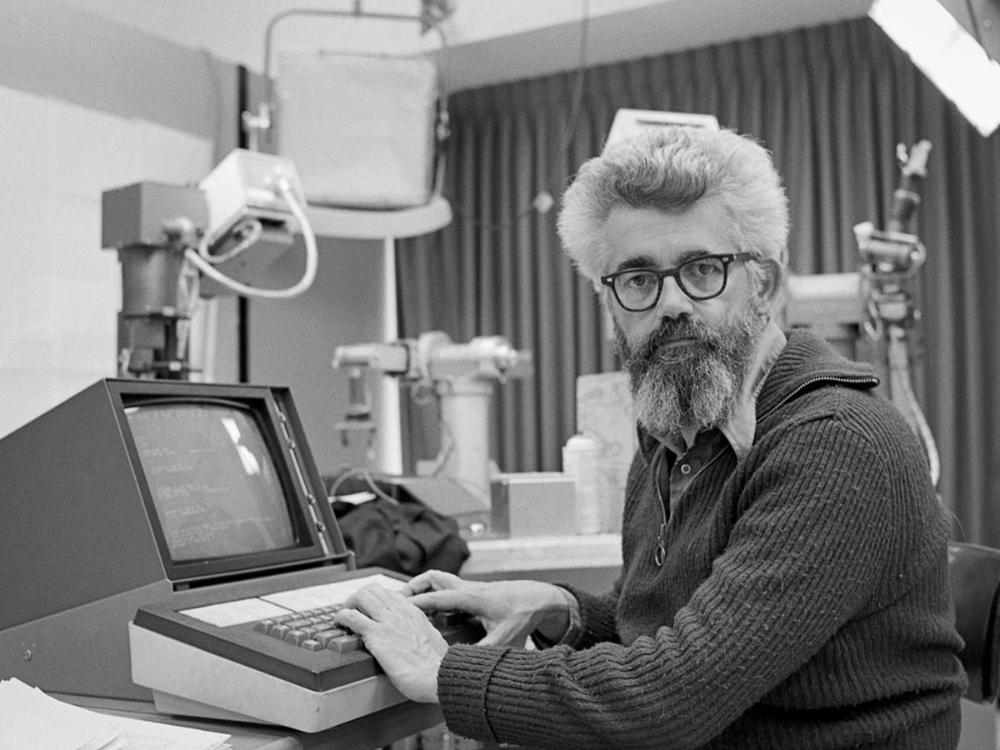
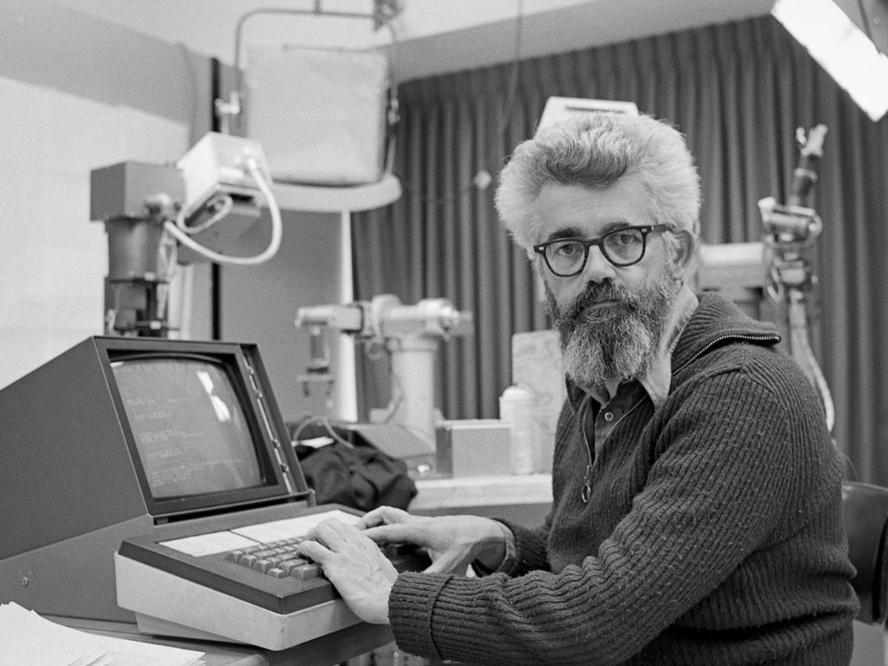

Primeros comienzos (décadas de 1950 a 1960)
El campo de la IA tal como lo conocemos hoy nació en la década de 1950 cuando científicos informáticos, como Alan Turing y John McCarthy, comenzaron a investigar la posibilidad de crear máquinas. que podría exhibir un comportamiento inteligente. Turing propuso la "prueba de Turing", una forma de determinar si una máquina puede demostrar una inteligencia similar a la humana.
 

Alan Turing John McCarthy
El invierno de la IA (décadas de 1970 y 1980)
A pesar de los avances iniciales, el progreso de la IA enfrentó importantes desafíos y retrocesos en las décadas de 1970 y 1980. Este período, conocido como el "Invierno de la IA", se caracterizó por expectativas poco realistas y aplicaciones deficientes. Se redujo la financiación para la investigación de IA, lo que provocó una disminución en el interés y los recursos.
Sistemas expertos y redes neuronales(1980-1990)
El campo de la IA recuperó impulso en la década de 1980 con el desarrollo de sistemas expertos. Estos eran sistemas basados en reglas que podían imitar los procesos de toma de decisiones de expertos humanos. Además, las redes neuronales, inspiradas en el cerebro humano, llamaron la atención por su capacidad para aprender y reconocer patrones.
Aparición de Big Data y Machine Learning
(1990-2000)
Con el auge de Internet y el aumento del poder computacional, la disponibilidad de grandes cantidades de datos se convirtió en un recurso valioso para la IA. Los algoritmos de aprendizaje automático, que incluían técnicas como árboles de decisión y máquinas de vectores de soporte, se hicieron prominentes, lo que permitió que los sistemas de IA mejoraran su rendimiento a través del análisis de datos.
Avances en aprendizaje profundo e inteligencia artificial (2010-presente)
La última década ha sido testigo de avances sustanciales en inteligencia artificial, en gran parte impulsados por el aprendizaje profundo. Mediante el uso de redes neuronales artificiales con numerosas capas, las técnicas de aprendizaje profundo revolucionaron la visión por computadora, el procesamiento del lenguaje natural y el reconocimiento de voz. Estos avances llevaron a la aplicación práctica de la IA en varios dominios, incluidos vehículos autónomos, asistentes virtuales, atención médica, finanzas y más.
Consideraciones éticas y direcciones futuras
A medida que la IA continúa avanzando, las consideraciones éticas en torno a la privacidad, los prejuicios, la autonomía y la responsabilidad se han vuelto cruciales. Investigadores, legisladores y organizaciones están trabajando activamente para establecer marcos y prácticas de IA responsables.